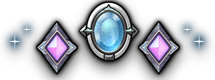

⚔️FFXIV MIT Planner
== {{ group.label }} ==
{{ party.length }}/8
 P{{ pIdx+1 }}
P{{ pIdx+1 }}
{{ tokenDocName }}
{{ tokenDocName }}
唯讀
↺ 已更新
×
點職業加入
您正在預覽分享的規劃，尚未覆蓋您本機的儲存資料。如要採用此規劃，請點右側按鈕。
技能備註
[{{ noteEditor.hitTime }}]
{{ noteEditor.rowSkill }}
|
{{ noteEditor.skillName }}
Ctrl+Enter 儲存
備註{{ notesCard.pIdx >= 0 ? ` · P${notesCard.pIdx + 1}` : '' }}
{{ notesCardEntries.length }}
右鍵點擊技能格可新增備註
{{ note.rowSkill }}
|
{{ note.skillName }}
{{ note.text }}
|
|
|
|||||
|---|---|---|---|---|---|---|
| 階段 | 判定時間 | 招式名稱 | 原始傷害 |
乙太超流
 蛇膽 |
請點選上方職能加入你想模擬的職業
最多可加入八名成員
|
預計傷害 |
| {{ row.phase }} 自訂 | {{ row.hitTime }} |
?
?
|
-
|
∞
✓
✓
|
|
{{ discordUsername }}
已連結 Discord
功能選單
我的範本
載入中…
📋
尚無儲存的範本
{{ new Date(doc.updated_at).toLocaleDateString('zh-TW', { year: 'numeric', month: '2-digit', day: '2-digit' }) }}
共同編輯
可編輯，持有者可儲存修改
唯讀
僅能瀏覽，無法修改
編輯
唯讀
{{ new Date(bm.updated_at).toLocaleDateString('zh-TW', { year: 'numeric', month: '2-digit', day: '2-digit' }) }}
顯示設定
副本參數
其他工具
登入 Discord 並儲存範本後，可從範本列表複製共同編輯或唯讀連結
參數設定
設定後的護盾值將即時更新於技能提示中，預計傷害也會減去護盾值，設定依副本類型分開儲存
血量
補師精神力（MND）
修改履歷
{{ tokenDocName }}
載入中…
🕐
尚無修改紀錄
每次儲存後會自動記錄，最多保留 30 筆
{{ formatHistoryTime(entry.created_at) }}
目前版本
{{ entry.display_name }}
副本
{{ dutyIndex.duties.find(d => d.key === entry.data.duty)?.name || entry.data.duty || '—' }}
隊伍
{{ (entry.data.party || []).join(' · ') || '—' }}
技能施放
{{ Object.values(entry.data.mits || {}).reduce((s, a) => s + a.length, 0) }} 筆
備註
{{ Object.keys(entry.data.notes || {}).length }} 筆
最多保留 30 筆，超過時自動刪除最舊紀錄
預覽模式：{{ previewMode.label }}
合併衝突（{{ conflictDialog.enriched.length }} 個）
他人在您編輯期間也修改了以下項目。請逐一選擇要保留哪個版本，完成後點「確認合併」。
{{ idx + 1 }}
{{ c.label }}
未選擇的項目預設保留他人版本
{{ skillTooltip.skill.name }}
持續 {{ skillTooltip.skill.duration }}s
CD {{ skillTooltip.skill.cooldown }}s
{{ skillTooltip.skill.title }}
條件
互斥
×{{ skillTooltip.skill.charges }} 充能
條件
條件
減傷
無敵
HOT
護盾
護盾計算
{{ sh.label }} {{ sh.note }}
{{ sh.label }}
{{ sh.value.toLocaleString() }} HP
治療 {{ sh.healAmount.toLocaleString() }} × {{ Math.round(sh.shieldRatio * 100) }}%
總計（全層）：{{ sh.total.toLocaleString() }} HP
秘策
暴擊護盾
{{ sh.critValue.toLocaleString() }} HP
總計（全層）：{{ sh.critTotal.toLocaleString() }} HP
+ 插入
{{ currentTutorialStep.title }}
{{ currentTutorialStep.text }}
{{ tutorialMockSkillTooltip.skill.name }}
持續 {{ tutorialMockSkillTooltip.skill.duration }}s
CD {{ tutorialMockSkillTooltip.skill.cooldown }}s
{{ tutorialMockSkillTooltip.skill.title }}
減傷
無敵
HOT
護盾
{{ sh.label }}
{{ sh.value.toLocaleString() }} HP
{{ tutorialStep + 1 }} / {{ TUTORIAL_STEPS.length }}
{{ currentTutorialStep.title }}
{{ currentTutorialStep.text }}
{{ tutorialStep + 1 }} / {{ TUTORIAL_STEPS.length }}
連結已複製到剪貼簿！